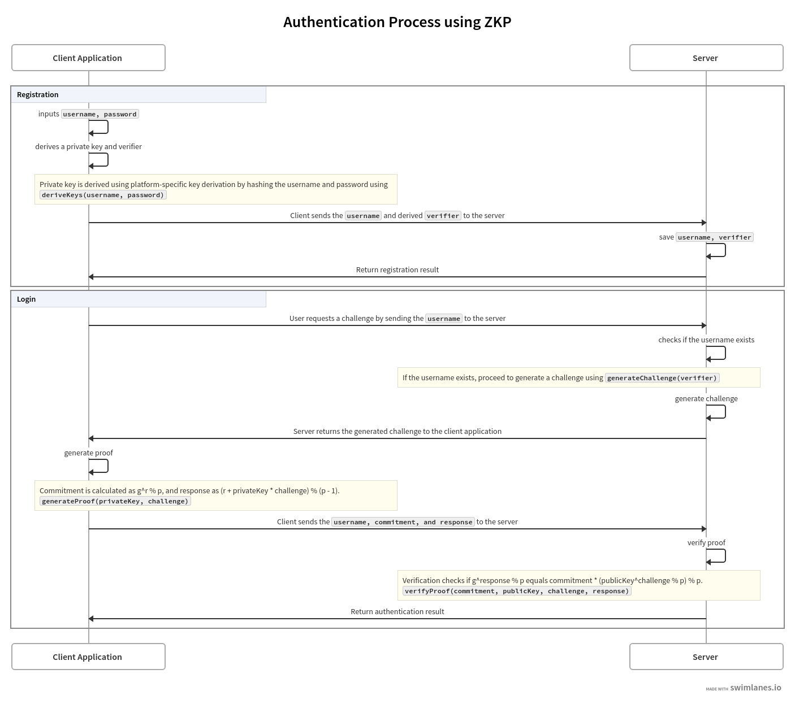

Zero-Knowledge Proof Authentication
Introduction
Zero-Knowledge Proofs (ZKPs) provide a way for users to authenticate themselves without revealing sensitive data such as passwords. This process involves proving knowledge of a secret without directly sharing it. The authentication flow is composed of several steps, each ensuring that the user's credentials remain secure. Below is an overview of the ZKP authentication process, implemented using both Kotlin (for the mobile client) and JavaScript (for the frontend client).
Zero-knowledge proofs are characterized by three essential properties:
- Completeness: If the statement is true, an honest verifier will be convinced by an honest prover.
- Soundness: A dishonest prover cannot convince the verifier of a false statement except with negligible probability.
- Zero Knowledge: The verifier learns nothing beyond the fact that the statement is true.
These properties make ZKPs particularly useful in scenarios where privacy and security are paramount.
The Schnorr protocol is a specific implementation of a zero-knowledge proof that allows a prover to demonstrate knowledge of a discrete logarithm. It is based on the hardness of the discrete logarithm problem, which is widely regarded as a secure foundation for cryptographic systems.
The Schnorr protocol can be broken down into the following steps:
-
Setup:
Let
pbe a large prime number, andgbe a generator of a cyclic groupGof orderq(whereqdividesp-1).The prover has a secret key
x(the discrete logarithm) and computes the public keyy = gx mod p. -
Commitment:
The prover selects a random nonce
rand computes the commitment:R = gr mod pThe prover sends
Rto the verifier. -
Challenge:
The verifier generates a random challenge
c(often using a cryptographic hash function) and sends it to the prover. -
Response:
The prover computes the response
sas follows:s = r + cx mod qThe prover sends
sback to the verifier. -
Verification:
The verifier checks the validity of the proof by verifying the equation:
gs mod p <?> R · yc mod pIf the equation holds, the verifier is convinced that the prover knows the secret
x.
The Schnorr protocol has several practical applications in the field of cryptography:
-
Digital Signatures:
Schnorr signatures provide a compact and efficient alternative to traditional signature schemes. They allow for signature aggregation, which can significantly reduce the size of blockchain transactions. This is particularly beneficial in environments where bandwidth and storage are limited.
-
Authentication:
The protocol can be used in authentication systems where users can prove their identity without revealing their credentials. This enhances security by minimizing the risk of credential theft.
-
Cryptocurrency:
Many cryptocurrencies, including Bitcoin, are exploring the integration of Schnorr signatures to enhance privacy and scalability. By using Schnorr signatures, transactions can be aggregated, allowing multiple transactions to be combined into a single signature, thereby reducing the overall data size on the blockchain.
-
Privacy-Preserving Protocols:
The Schnorr protocol can be utilized in various privacy-preserving applications, such as confidential transactions and secure voting systems, where it is crucial to prove knowledge of a secret without revealing the secret itself.
Usage
Sample Usage for Authentication
Registration Flow
- The client sends a username and verifier to the server.
- The server saves the username and verifier in the database.
Challenge Generation
- The client requests a challenge by sending the username to the server.
- The server checks if the username exists, generates a challenge, and saves it to the database.
- The server returns the generated challenge to the client.
Proof Verification
- The client generates a proof using the challenge and private key. The proof returns a pair of strings: commitment and response.
- The client sends the username, commitment, and response to the server.
- The server verifies the proof using the commitment, response, user verifier (already in the database), and challenge (already in the database).
- If the verification returns true, the user is authenticated.
Server (Kotlin)
Add the ZKP library dependency to your server project.
implementation("io.github.suwasto:zkpschnorrproofs:0.1.0")Generating challenge
- send username from client
- fetch verifier from database if exist, if not exist return username not registered
- generate challenge using below function and return to client
val challenge = SchnorrServer.generateChallenge(verifier)Note: Make sure to set expiry or one time usage mechanism for generated challenge to prevent it to be reused
Verifying proof
- client generate proof from challenge and private key
- client send username, commitment, and response to server
- verify proof using below function and return the result to client
val isAuthenticated = SchnorrServer.verifyProof(commitment, verifier, challenge, response)Note: fetch verifier and challenge from server database using username
Mobile Client (Kotlin)
Add the ZKP library dependency to your kotlin multiplatform project.
implementation("io.github.suwasto:zkpschnorrproofs:0.1.0")Registration Flow
- enter username and password
- use below code to derive keys and send username and public key (verifier) to server to be saved
val keys = SchnorrMobileClient.deriveKeys(username, password)
val privateKey = keys.privateKey
val verifier = keys.publicKey
Login Flow
- enter username and password
- request challenge from server by sending username
- use below code to generate proof and send username, commitment and response to server
// generate keys from username, password
val keys = SchnorrMobileClient.deriveKeys(username, password)
val privateKey = keys.privateKey
// generate proof
val proof = SchnorrMobileClient.generateProof(privateKey, challenge)
val commitment = proof.first
val response = proof.second
Frontend Client (JavaScript)
- Install the
kmpzkplibrary via npm:npm install kmpzkp - Import the client class in your frontend JavaScript code:
const SchnorrClient = require("kmpzkp");
Registration Flow
- enter username and password
- use below code to derive keys and send username and public key (verifier) to server to be saved
const keys = SchnorrClient.deriveKeys(username, password);
const privateKey = keys.privateKey;
const verifier = keys.publicKey;
Login Flow
- enter username and password
- request challenge from server by sending username
- use below code to generate proof and send username, commitment and response to server
// generate keys from username, password
const keys = SchnorrClient.deriveKeys(username, password);
const privateKey = keys.privateKey;
// generate proof
const proof = SchnorrClient.generateProof(privateKey, challenge);
const commitment = proof.first;
const response = proof.second;